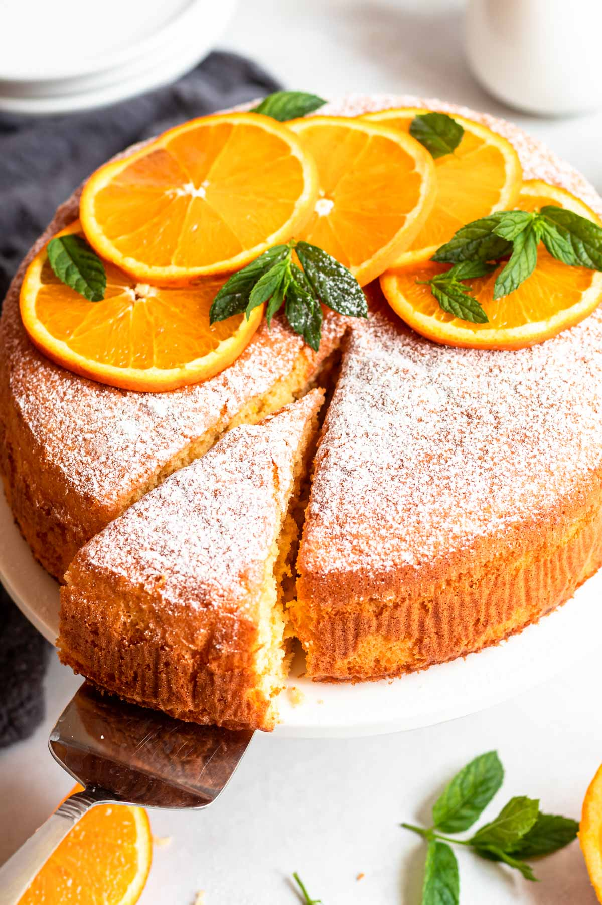

 Ingredients 4 apples 1 cup sugar 2 cups all-purpose flour 125 grams butter 1 teaspoon cinnamon 1 egg Baking powder
Instructions Peel and slice the apples. Melt the butter and add the apples. Cook the apples until soft. Add cinnamon. Add sugar and cook until caramelized. For the dough; mix the flour and baking powder. Prepare your dough and pour the apple mixture into it. Bake in a preheated oven at 180°C (350°F) for 20 minutes.